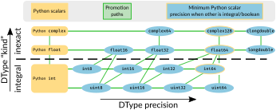

Повышение типов данных в NumPy#
При сочетании двух разных типов данных NumPy определяет подходящий dtype для результата операции. Этот шаг называется повышением типов или поиском общего dtype.
Обычно пользователю не нужно разбираться в деталях повышения типов: этот шаг, как правило, обеспечивает точность результата не ниже точности входных данных.
Например, когда входы имеют один и тот же dtype, dtype результата соответствует dtype входов:
>>> np.int8(1) + np.int8(1)
np.int8(2)
Смешивание двух разных типов данных обычно даёт результат с типом того из входных значений, у которого выше точность:
>>> np.int8(4) + np.int64(8) # 64 > 8
np.int64(12)
>>> np.float32(3) + np.float16(3) # 32 > 16
np.float32(6.0)
Обычно это не приводит к неожиданностям. Но при нестандартных dtype, например беззнаковых целых и вещественных типах низкой точности, либо при смешивании целых NumPy, вещественных NumPy и скаляров Python могут быть важны детали правил повышения типов. Они не всегда совпадают с правилами других языков [1].
Численные типы бывают четырех видов с естественной иерархией.
целые числа без знака (
uint)знаковые целые числа (
int)float (
float)комплексный (
complex)
В дополнение к виду, числовые типы NumPy также имеют связанную точность, указанную в битах.Вместе вид и точность указывают dtype. Например, uint8 является целым числом без знака, хранящимся с использованием 8 битов.
Категория типа результата всегда не ниже категории любого входного типа. Точность результата также не ниже точности входных данных. Уже эти правила могут давать неожиданные результаты:
При смешивании чисел с плавающей точкой и целых чисел точность целого числа может привести результат к более высокой точности с плавающей точкой. Например, результатом операции с участием
int64иfloat16являетсяfloat64.При сочетании знаковых и беззнаковых целых чисел одной разрядности результат имеет более высокую разрядность, чем оба входных типа. Если один из них уже 64-битный, более широкого целочисленного типа нет: например, операция с
int64иuint64даётfloat64.
Подробнее об обоих случаях см. раздел Numerical promotion и рисунок ниже.
Подробное поведение скаляров Python #
Начиная с NumPy 2.0 [2] действует важное правило повышения типов: операции с двумя типами данных NumPy никогда не теряют точности, однако операции с типом данных NumPy и скаляром Python (int, float или complex) могут её терять. Например, естественно ожидать, что операция между целым числом Python и целым числом NumPy даст целое число NumPy. Однако целые числа Python имеют произвольную точность, а все типы данных NumPy — фиксированную, поэтому сохранить произвольную точность целых чисел Python невозможно.
В более общем плане NumPy рассматривает «вид» скаляров Python, но игнорирует их точность при определении результата dtype. Это часто удобно. Например, при работе с массивами низкой точности dtype обычно желательно для простых операций со скалярами Python сохранять dtype.
>>> arr_float32 = np.array([1, 2.5, 2.1], dtype=np.float32)
>>> arr_float32 + 10.0 # undesirable to promote to float64
array([11. , 12.5, 12.1], dtype=float32)
>>> arr_int16 = np.array([3, 5, 7], dtype=np.int16)
>>> arr_int16 + 10 # undesirable to promote to int64
array([13, 15, 17], dtype=int16)
Комментарии к примеру на русском
- Нежелательно повышать точность до float64
- Нежелательно повышать разрядность до int64
В обоих случаях точность результата диктуется NumPy dtype. Из-за этого arr_float32 + 3.0 ведет себя так же, как arr_float32 + np.float32(3.0), а arr_int16 + 10 ведет себя как arr_int16 + np.int16(10.).
В качестве другого примера, при смешивании целых чисел NumPy с Python float или complex, результат всегда имеет тип float64 или complex128 :
>> np.int16(1) + 1.0 np.float64(2.0)
Однако эти правила могут также привести к удивительному поведению при работе с низкоточными типами.
Во-первых, значение Python преобразуется в значение NumPy до выполнения операции. Поэтому ошибка возможна даже тогда, когда результат кажется очевидным. Например, np.int8(1) + 1000 невозможно выполнить, поскольку 1000 превышает максимальное значение int8. Если скаляр Python нельзя преобразовать в dtype NumPy, возникает ошибка:
>>> np.int8(1) + 1000
Traceback (most recent call last):
...
OverflowError: Python integer 1000 out of bounds for int8
>>> np.int64(1) * 10**100
Traceback (most recent call last):
...
OverflowError: Python int too large to convert to C long
>>> np.float32(1) + 1e300
np.float32(inf)
... RuntimeWarning: overflow encountered in cast
Во-вторых, точность float и int Python всегда игнорируется, поэтому скаляр NumPy низкой точности сохраняет её, пока не будет явно преобразован в более точный dtype NumPy или скаляр Python, например через int(), float() или scalar.item(). Низкая точность может ухудшать вычисления или давать неверные результаты, особенно при целочисленном переполнении:
>>> np.int8(100) + 100 # the result exceeds the capacity of int8
np.int8(-56)
... RuntimeWarning: overflow encountered in scalar add
Комментарии к примеру на русском
- Результат выходит за диапазон int8
NumPy предупреждает о переполнении для скаляров, но не для массивов. Например, np.array(100, dtype=np.uint8) + 100 не выдаёт предупреждение.
Повышение числовых типов#
На следующем изображении показаны правила повышения числовых типов: по вертикали расположены категории типов, по горизонтали — точность.

Подписи на рисунке: Python scalars — скаляры Python; Promotion paths — пути повышения типов; Minimum Python scalar precision when other is integral/boolean — минимальная точность скаляра Python, если другой операнд имеет целочисленный или логический тип; DType kind — вид типа данных; integral — целочисленные типы; inexact — типы приближённых чисел, то есть вещественные и комплексные; DType precision — точность типа данных. Python int, float и complex — встроенные типы Python; остальные названия — типы NumPy. Стрелка вправо показывает увеличение точности, стрелка вверх — переход к другому виду чисел.Категория результирующего dtype определяется входным dtype с более высокой категорией. Точность результата выбирается минимально возможной, но так, чтобы на диаграмме он не находился левее ни одного из входных типов.
Обратите внимание на следующие конкретные правила и замечания:
При взаимодействии Python
floatилиcomplexс целым числом NumPy результат имеет типfloat64илиcomplex128(жёлтая рамка). Логические значения NumPy также приводятся к целочисленному типу по умолчанию [3]. Это правило не применяется, если в операции дополнительно участвуют значения NumPy с плавающей запятой.На рисунке точность расположена так, что
float16 < int16 < uint16: большие значенияuint16не помещаются вint16, а большие значенияint16теряют точность при хранении вfloat16. Однако из этого правила есть исключение: NumPy всегда считаетfloat64иcomplex128допустимыми результатами повышения для любого целого значения.Особый случай: многие сочетания знаковых и беззнаковых целых типов NumPy повышает до
float64. Здесь используется более высокая категория типов, поскольку ни один знаковый целочисленный dtype не может представить весь диапазонuint64.
Исключения из общих правил повышения типов#
В NumPy продвижение типов определяется поведением конкретных функций при выборе типа результата, поэтому иногда оно отличается от результата np.result_type.
Поведение sum и prod #
np.sum и np.prod при свёртке целочисленных или логических значений обычно используют целочисленный тип платформы; для знаковых чисел это обычно int64. Типы малой разрядности повышаются, чтобы снизить вероятность переполнения и неожиданных результатов. То же правило действует для np.add.reduce и np.multiply.reduce. Примечание переводчика: утверждение оригинала «всегда целочисленный тип по умолчанию» неточно: для беззнаковых входов используется беззнаковый целочисленный тип, а явно заданный dtype также влияет на результат.
Особенности поведения целочисленных скаляров NumPy и Python#
Повышение типов в NumPy определяет dtype результата и точность операции, но иногда тип результата задаётся самой операцией. Деление всегда возвращает числа с плавающей точкой, а сравнение — логические значения.
Это приводит к тому, что может показаться «исключениями» из правил:
Сравнения в NumPy с целыми числами Python или с целыми числами разной точности всегда дают правильный результат. Входные данные никогда не приводятся к типу, вызывающему потерю точности.
При сравнении типов, которые нельзя привести к общему типу, все результаты будут
Falseдля проверки равенства илиTrueдля проверки неравенства.Унарные математические функции, такие как
np.sin, которые всегда возвращают значения с плавающей запятой, принимают любые целочисленные входные данные Python, преобразуя их вfloat64.Деление всегда возвращает значения с плавающей точкой. Поэтому оно допускает деление любого целого числа NumPy на любое целое число Python, приводя оба операнда к
float64.
В принципе, некоторые из этих исключений могут быть полезны и для других функций. Если вы так считаете, создайте задачу в трекере.
Особенности поведения со встроенными классами типов Python#
При объединении встроенных скалярных типов Python (то есть float, int или complex, а не скалярных значений) правила повышения типов могут показаться неожиданными:
>>> np.result_type(7, np.array([1], np.float32))
dtype('float32') # The scalar value '7' does not impact type promotion
>>> np.result_type(type(7), np.array([1], np.float32))
dtype('float64') # The *type* of the scalar value '7' does impact promotion
# Similar situations happen with Python's float and complex types
Комментарии к примеру на русском
- Скалярное значение 7 не влияет на продвижение типов
- А вот *тип* скалярного значения 7 влияет на продвижение типов
- Аналогичные ситуации возникают с типами float и complex Python
Такое поведение объясняется тем, что NumPy преобразует int в свой целочисленный тип по умолчанию и использует его при повышении типа:
>>> np.result_type(int)
dtype('int64')
Подробнее см. также Встроенные типы Python.
Повышение нечисловых типов данных#
NumPy распространяет правила продвижения типов и на нечисловые типы, хотя во многих случаях такое продвижение не определено однозначно и поэтому запрещено.
Применяются следующие правила:
Байтовые строки NumPy (
np.bytes_) могут повышаться до строк Unicode (np.str_). Однако приведение байтов к Unicode завершается ошибкой для символов вне ASCII.В некоторых случаях NumPy приводит почти любой другой тип данных к строковому. Это относится к созданию и объединению массивов.
Если подходящий общий тип подобрать невозможно, конструкторы массивов, например
np.array(), используют типobject.Структурированные типы данных могут приводиться к общему типу, если совпадают имена и порядок их полей. В этом случае тип каждого поля повышается отдельно.
В некоторых случаях NumPy допускает повышение типа
timedeltaсовместно с целочисленными типами.
Примечание
Некоторые из этих правил могут удивить; в будущем рассматривается возможность их изменения. Однако пользу любых изменений, нарушающих обратную совместимость, необходимо сопоставлять с риском нарушения работы существующего кода. Если у вас есть конкретные предложения о том, как должно работать повышение типов, создайте issue.
Особенности экземпляров dtype после повышения типов#
Выше в основном обсуждалось смешивание разных классов DType. Экземпляр dtype, связанный с массивом, может содержать дополнительные сведения: порядок байтов, метаданные, длину строк или точную структуру структурированного dtype.
Хотя длина строки и имена полей структурированного типа данных важны, порядок байтов, метаданные и точное размещение полей NumPy считает деталями хранения.
При повышении типов NumPy не учитывает эти особенности хранения:
Порядок байтов преобразуется в родной порядок платформы.
Метаданные, прикрепленные к dtype, могут сохраняться или не сохраняться.
Полученные структурированные типы будут упакованы (но выровнены, если входы были).
Такое поведение лучше всего подходит большинству программ, где детали хранения не влияют на результат, а неправильный порядок байтов может существенно замедлить вычисления.